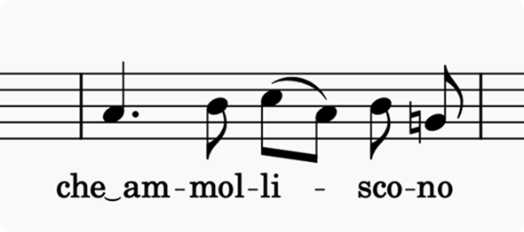
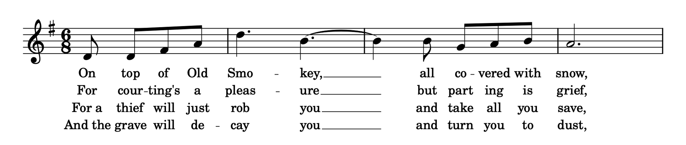

歌词
概述
歌词是与谱表上的旋律线条相关联的演唱文本。

歌词按音节逐个输入，用连字符连接一个词中的音节。在词的末尾，当下一个音节要跨越多个音符演唱时（无论是跨越一系列延音线相连的音符，还是跨越多个音高，后者称为花腔），会显示一条下划线（或延长线）。
输入歌词
要开始向音符添加歌词：
- 选择所需的起始音符
- 按 Ctrl+L（Mac 和 Linux：Cmd+L）或选择菜单选项 添加→文本→歌词，这将创建一个准备好进行文本输入的边界框
- 输入该音符的音节。
下一步取决于文本。
- 要输入属于同一个词的下一个音节：
- 按 -（连字符）。这会前进到下一个音符。如果前一个音节要跨越多个音符演唱，请反复按 -，直到到达下一个音节的音符。然后输入下一个音节。
- 要输入开始一个新词的音节：
- 如果前一个音节只跨越一个音符，只需按 Space 前进到下一个音符。然后输入下一个音节。
- 如果前一个音节要跨越多个音符演唱，请反复输入 _（下划线），直到到达下一个音节的音符。
_ 键会画一条下划线，以在词尾显示花腔。第一次按该键时线条就会开始绘制，但由于根据定义花腔线必须跨越多个音符，如果你随后在下一个音符上开始输入音节，该线条就会消失。
在输入或编辑歌词时，按 Left 或 Right 光标键会像往常一样一次移动一个字符。当你到达音节的末尾时，它会跳到下一个音节。
任何时候按 Space——即使光标位于音节中间——都会前进到下一个音符。Shift+Space 会跳回一个音节。
要输入很长的虚线或下划线，有一个快捷方式可以避免反复输入 - 或 _：
- 输入第一个音节
- 选择花腔的最后一个音符（即下一个音节之前的音符）
- 根据需要输入一次 - 或 _。虚线或下划线将从第一个音节一直画到所选音符，光标将前进到下一个音符，以便你开始输入下一个音节。
在休止符上输入歌词
输入歌词时，光标会跳过休止符。但是，如果你需要在休止符上输入歌词，可以通过显式选择该休止符、按 Ctrl+L，然后输入音节来完成。
输入保留字符
在大多数情况下，歌词可以像其他任何文本一样输入和编辑。但是，如上所述，像 - 和 _ 以及 Space 这样的键在歌词输入期间具有特殊功能。如果你想在音节中输入这些字符，必须使用以下按键组合：
| 字符 | Windows/Linux | macOS |
|---|---|---|
| 空格 ( ) | Ctrl+Space | Opt+Space |
| 连字符 (-) | Ctrl+- | Opt+- |
| 下划线 (_) | Ctrl+Shift+_ | Opt+Shift+_ |
| 换行 (↵) | Ctrl+Return（或数字小键盘上的 Enter） | Opt+Return（或数字小键盘上的 Enter） |
输入省音连音线
省音连音线（歌词连音线或元音融合）是一种将一个音符下的两个音节连接起来的符号。要输入此示例中的歌词：

- 输入
che - 打开特殊字符对话框
- 单击常用符号选项卡中的一个省音连音线（有三种不同的宽度可用）
- 输入
am - 按 -（连字符）移动到下一个音符，然后继续以通常方式输入歌词。
多段歌词
歌词可以组织为段，第 1 段在顶部，后续段依次排列在下面：

一份包含四段歌词的乐谱
输入多段歌词
要输入后续段，只需重复上述输入歌词中的步骤。歌词输入会自动从最后输入段的下方空间开始。
在输入或编辑歌词时，你可以使用 Up 和 Down 光标键在各段之间移动。按 Return 或 Enter 键也会向下移动到下一段。
在段之间移动歌词
所有歌词都被分配一个段号，顶行为第 1 段，下一行为第 2 段，依此类推。你可以通过选择歌词并调整 属性→歌词→设置到段 的值来更改歌词的段号。这也会相应地更改垂直顺序。
在乐谱上显示段号
你可以通过在第一段音节之前显式输入数字来为段的开头添加数字。要在数字和音节之间创建空格，请键入 Ctrl+Space（Mac：Opt+Space）。
要跨多个段对齐数字，请勾选 格式→样式→歌词→歌词文本→对齐段号。
编辑已有歌词
要对已有歌词进行添加或更改，请双击一个音节或使用任何其他文本编辑模式快捷键。
删除歌词
你可以通过选择音节并按 Del 或 Backspace 来删除歌词。如果其父音符被删除，歌词也会自动删除。
复制歌词
如果你复制一个音符范围选区，附着在它们上的任何歌词都会被自动复制。
你可以使用通常的复制和粘贴方法将歌词本身从一个音符范围复制到另一个范围，即：
- 选择一个范围或列表的歌词元素
- 按 Ctrl+C（Mac：Cmd+C）
- 选择目标音符
- 按 Ctrl+V，从所选音符开始粘贴歌词。
请注意，歌词将被粘贴到与源相同的段。目标范围应没有已有歌词，否则复制的歌词会粘贴到它们之上。
你可以使用菜单选项 工具→将歌词复制到剪贴板 将乐谱中的所有歌词复制到剪贴板。如果你想将它们粘贴到任何其他软件中，这会很有用。
从外部文件粘贴歌词
如果你在文本编辑器（例如 Windows 上的记事本）中输入了一系列歌词，包括所需的连字符和空格，你可以将其粘贴到 MuseScore Studio 中：
- 在编辑器中选择文本并将其复制到剪贴板
- 在 MuseScore 中，选择起始音符并按 Ctrl+L（如有必要，你也可以按 Return/Enter 移动到特定段）
- 反复按 Ctrl+V，一次一个音节地粘贴歌词。
将歌词放在谱表上方
所有歌词默认都放在谱表下方。要将歌词移到谱表上方（例如，处理多个声部时）：
- 选择歌词
- 转到属性面板
- 在文本下，将位置设置为上方。
如果你希望乐谱上的所有歌词都移到谱表上方，请将 格式→样式→歌词→歌词文本→位置 设置为上方。
歌词样式
格式→样式→歌词 控制许多指定歌词排版和外观的设置，其中一些非常精细。

歌词文本
编辑歌词文本样式按钮会带你进入文本样式中可配置歌词样式的页面。有两种样式，默认情况下它们的定义完全相同。奇数行歌词应用于所有奇数编号的段（1、3、5 等），偶数行歌词应用于所有偶数编号的段（2、4、6 等）。这使你能够，例如，在第 1 段中使用一种歌词，在第 2 段中使用这些歌词的翻译，并使用不同的样式，例如斜体。
其他设置如下：
- 位置：歌词应在谱表上方还是下方
- 上方偏移/下方偏移：歌词在上方或下方时的默认垂直位置
- 行高：连续行（段）之间的距离，以字体主体高度的百分比表示
- 避开小节线：如果勾选，必要时会在歌词两侧留出额外空间，以避免与小节线冲突。如果你希望歌词与小节线重叠，请取消勾选此选项，在这种情况下，最好确保 格式→样式→小节线→文本相交时遮挡小节线 已勾选。
- 到当前谱表的最小边距：歌词与其所附着谱表之间的最小距离
- 到其他谱表的最小边距：歌词与最近的外部谱表之间的最小距离
- 歌词之间的最小间距：相邻歌词音节之间的最小内边距。如果避开小节线开启，这也控制歌词与小节线之间的内边距。
- 对齐段号：对齐手动输入的段号。请参阅上面的在乐谱上显示段号。
连字符
- 最小连字符长度/最大连字符长度：连字符的最小和最大长度。当有足够空间时，默认使用最大长度，但在空间紧张的情况下会缩短到最小长度。
- 连字符粗细：连字符的粗细
- 垂直位置：连字符的垂直位置，以字体高度的百分比表示，从基线向上测量
- 连字符与文本之间的最小间距：连字符与两侧歌词之间的内边距
- 连字符之间的最大间距：连续连字符之间的最大距离。当超过此距离时，会向线条中添加额外的连字符。
- 限制连字符数量为：线条中连字符数量的上限
- 空间有限时省略连字符：如果勾选，当空间不足时（考虑到最小连字符长度和内边距），将不绘制连字符
- 后跟连字符的音节永不左对齐：音节默认以音符为中心，但当它们跨越多个音符时会变为左对齐。如果勾选，后跟连字符的歌词即使跨越多个音符也永远不会变为左对齐。
- 在系统第一个音符的音节前重复连字符：当一个词的音节被系统换行分隔，且新系统上的音节位于第一个音符时，此选项指定是否应在该音节之前绘制连字符
- 系统开头连字符的位置：当一个词的音节被系统换行分隔，且新系统上的音节不位于第一个音符时，此选项指定该行第一个连字符应出现的具体位置。有三种选项：
- 标准：虚线在系统标题和下一个音节之间居中
- 在标题内部：第一个连字符出现在音符之前（与部分延音线或连音线开始的位置相同）
- 在第一个音符下方：第一个连字符恰好出现在系统第一个音符的正下方
延长线
这些在手册中也被称为花腔。
- 最小线条长度：延长线的最小长度
- 线条粗细：线条的粗细
- 线条间隙：音节与线条之间的距离
- 空间有限时省略延长线：当空间不足时（考虑到最小长度和必要的内边距），是否可以省略线条。